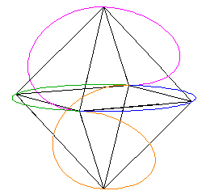

While playing with wire models of the Pattern Knot ("Mereon" knot) of Lynnclaire Dennis, I found an orientation which maps to the Octahedron vertices.
This is a different mapping than the previous Octahedron mapping I did here.
Consider the Octahedron.
| Figure 1 |
Draw a circle around the "equator" of the Octahedron.
| Figure 2 |
The remaining circles to be added are hard to see.
Add a circle so that an edge of the Octahedron is the diameter of the circle.
| Figure 3 |
We cut away 1/2 of this circle.
| Figure 4 |
Follow the edge, which is the diameter of this 1/2 circle, from the "equator", up through the top vertex and down along the "opposite" edge.
Add a circle around this edge.
| Figure 5 |
Cut away half of this new circle in such a way that the 2 half-circles that meet at the top vertex make a nice continuous curve through the vertex.
|
|
| Figure 6 |
We do this 2 more times (adding a circle, removing 1/2 of it) in the "bottom hemisphere" of the Octahedron.
| Figure 7 | Figure 8 |
The result is the Pattern knot.

|
 |
| Figure 9 | Figure 9B |
(In Figure 9B, I colored 1/2 of the blue "equator" circle green.)
Here are some other perspectives.
| Figure 12 | Figure 10 |
| Figure 11 |
Note that this really isn't a knot until we specify what happens at the 2 crossover vertices. These are indicated with little green spheres in Figure 13.

|
| Figure 13 |
Depending on the weave at these vertices, you get a knot or not.
I will not go into the weaves at this time. However I will say that depending on the weave you get either the "Lynnclaire" Trefoil knot, or the "Lou" Trefoil knot or the "Bob" knot, which is not a Trefoil knot. For further explanation of this see this web page.
An interesting feature is that the weaves can "open" to allow the definition of 2 parallel lines. When the knot is defined on the Tetrahedron ( see this web page ), the 2 weave junctions define 2 lines at an orientation of 90 degrees from one another.
| Figure 14 |
Here are some animation....
| Figure 15 |
Here I add a cube. The orientation of the cube is such that several of the lobes are in the plane ofthe cube's square faces.
| Figure 16 |
Here you can see the cube orientation a little better.
| Figure 17 |
Here are some images which I hope better shows the parallel line aspect I mentioned above. Here the red lines through the 2 crossover points (where the wire is suppose to weave by itself to form a knot) corresponds to 2 of the cube's edges
| Figure 18 | Figure 19 |
Here is the same knot, different configuration, on the Tetrahedron.
| Figure 20 |
Look at the points where the wire has to weave around itself to form a knot. This is at the 2 midedge points (top edge and bottom edge).
These edges are at a 90 degree orientation from one another.
| Figure 21 | Figure 22 |
Usage Note: My work is copyrighted. You may use my work but you may not include my work, or parts of it, in any for-profit project without my consent.